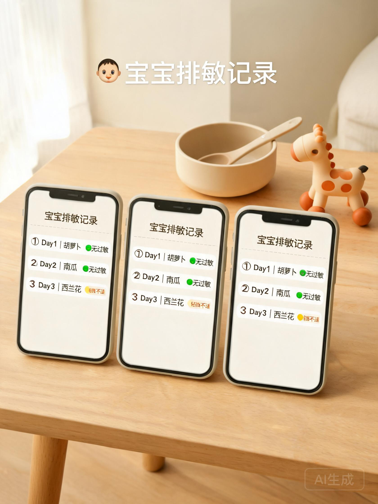
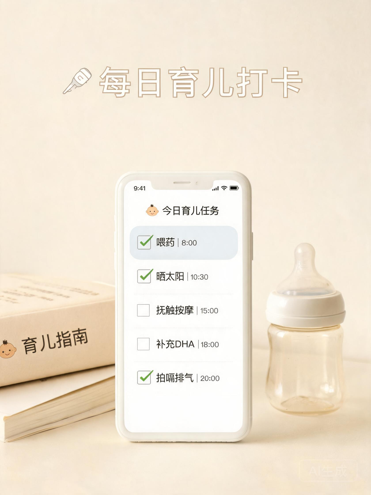
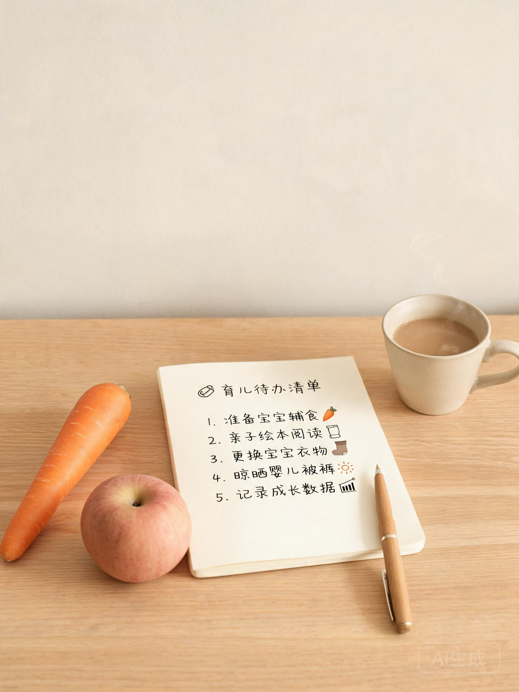
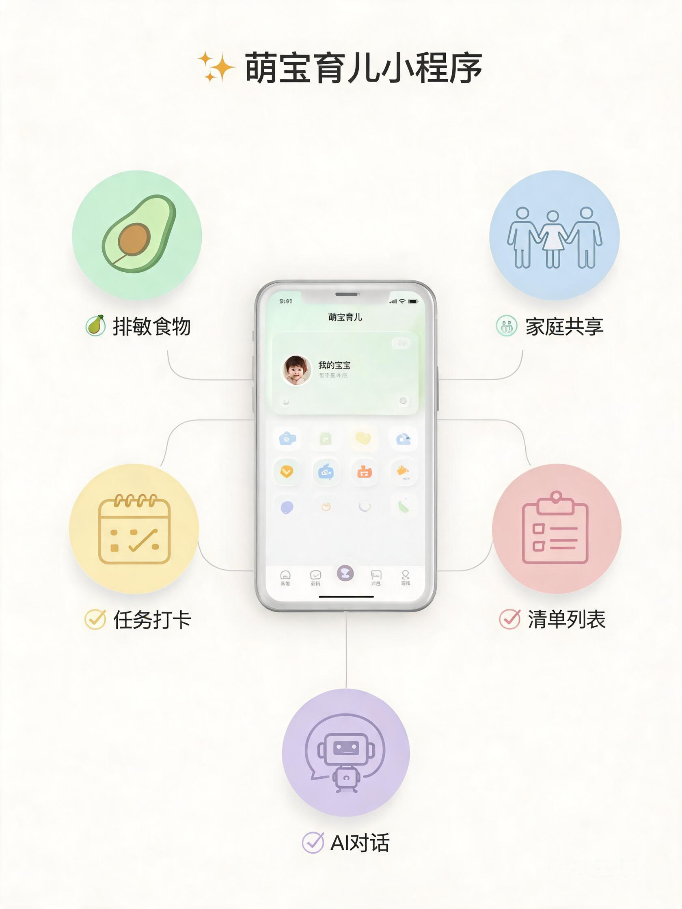

市面上90%的育儿App只做任务打卡，没人系统解决辅食排敏。朵叽按低敏(1-3天)/中敏(3天)/高敏(5天)分级，自动推荐下一个该试的食物，告别手写Excel和备忘录。
妈妈添加排敏食物，爸爸、爷爷奶奶手机同步看到。邀请码加入家庭，数据按家庭隔离。解决"妈妈不在家，老人不知道喂了什么"的千古难题。
两个模式：树洞倾诉（妈妈焦虑时的情绪出口）+ 育儿求助（科学步骤指导）。深夜宝宝哭闹不知道怎么办？问AI大师。
喂药、按摩、晒太阳——设成每日/每周循环任务，打卡后自动统计连续天数和完成率。新手爸妈的"第二个大脑"。
莫兰迪色系 + 无印良品美学，不像工具，更像生活伴侣。小红书用户很看重颜值，截图就是现成的高级感配图。
微信小程序，不用下载、不占内存、完全免费。云端存储不怕换手机丢数据，隐私合规已过审。
| 人群 | 核心痛点 | 痛点场景 | 内容切入点 |
|---|---|---|---|
| 辅食期妈妈 | 排敏概念模糊，不知道怎么操作 | 宝宝4-6个月开始加辅食，医生说"每种新食物试3天观察"，但到底怎么记录？试了哪些？哪天开始的？全忘了。 | 科普型干货 → 建立专业信任 → 自然种草工具 |
| 过敏宝宝家长 | 排敏过程焦虑，记录混乱 | 宝宝确诊食物过敏，需要系统排敏多种食物。用Excel记、用备忘录取、用脑子记——每次复诊医生问"试了什么？"一脸懵。 | 情绪共鸣 → 引发共情 → 解决方案 = 工具 |
| 隔代育儿家庭 | 信息不同步，喂养分歧 | 妈妈上班，奶奶带娃。妈妈说"今天不能试新食物"，奶奶觉得"我当年养你也没这么多事"。排敏记录全家看不到，隔代喂养冲突不断。 | 家庭场景演示 → 痛点共鸣 → 共享功能种草 |
| 新手爸妈 | 手忙脚乱，频繁忘事 | 第一次当爸妈，喂药忘了、按摩忘了、晒太阳忘了。每天像打仗，没有系统化管理工具，全靠脑子记。 | 痛点放大 → 工具推荐 → 打卡统计功能展示 |



